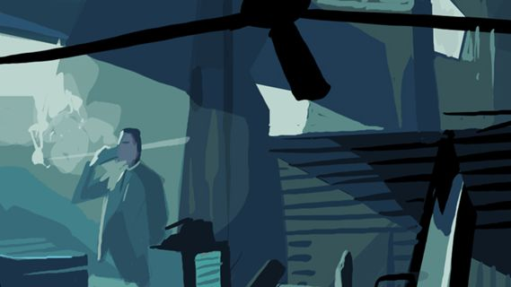
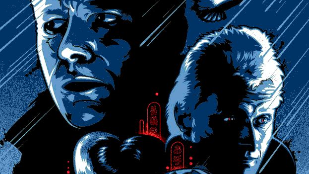

 Humans & Technology: What Separates Them? by Thomas Gramstad 10 min read Technology & Society creator-creation roy-batty
 Science-Fiction with an Angle by Maria Caldwell 5 min read Technology & Society cloning-genetics